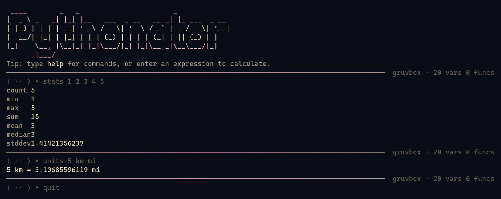

← Mark44928 / projects
Calculator · Python · standard library only
Pythonator
Plusalator's Python sibling: the same calculator habits, complex numbers, memory slots, ASCII plots and a REPL that explains its syntax tree.
git clone https://github.com/Mark44928/Pythonator.git
cd Pythonator && ./install.sh && pythonator

- Complex math
i, arg, re, im, conj - Parity corpuschecked against Plusalator
- 19 testsparser, engine and CLI
- No dependenciespure Python standard library